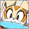
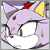
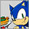
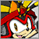
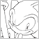
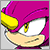
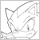
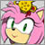
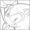

2014年12月

2014/12/19
「ソニック チャンネル」更新！

2014/12/17
「ソニック チャンネル」 更新！
2014/12/16
「ソニック チャンネル」更新！
2014/12/10
「ソニック チャンネル」 更新！
2014/12/01
「ソニック チャンネル」更新！
2014年11月
2014/11/25
「ソニック チャンネル」更新！
- 12月3日ニンテンドーeショップにて、体験版の配信が決定！
「ソニック チャンネル」更新！
- [トピックス/イベント情報]：「ソニックのクリスマスカード プレゼント」キャンペーンは終了いたしました。たくさんのご応募ありがとうございました。当選者の発表は、登録されたメールアドレス宛にご連絡いたします。
「ソニック チャンネル」更新！
2014年10月
2014/10/31
「ソニック チャンネル」更新！
- トレイラー追加！
『ソニックトゥーン 太古の秘宝』ゲーム紹介ムービー！
『ソニックトゥーン アイランドアドベンチャー』ゲーム紹介ムービー！
2014/10/29
「ソニック チャンネル」更新！
2014/10/20
「ソニック チャンネル」 更新！
2014/10/01
「ソニック チャンネル」更新！
2014年9月
2014/09/19
「ソニック チャンネル」 更新！
2014/09/18
「ソニック チャンネル」更新！
2014/09/17
「ソニック チャンネル」更新！
2014/09/10
「ソニック チャンネル」更新！
2014/09/08
「ソニック チャンネル」更新！
2014/09/04
「ソニック チャンネル」更新！
2014/09/01
「ソニック チャンネル」更新！
2014年8月

2014/08/20
「ソニック チャンネル」 更新！
2014/08/07
「ソニック チャンネル」更新！
- [トピックス/グッズ情報]MARS16より『ソニック＆オールスターレーシング TRANSFORMED』グッズ２アイテムが発売決定！
2014年7月
2014/07/22
「ソニック チャンネル」 更新！
- [ファンアート]：2014年9月掲載分のテーマは「夏の思い出」！
応募締め切りは9月掲載分 8/20（水）まで
- 『ソニックバースデープレゼントキャンペーン2014』は終了いたしました。たくさんのご応募ありがとうございました。当選者の発表は、登録されたメールアドレス宛にご連絡いたします。
2014年6月
2014/06/25
「ソニック チャンネル」更新！
2014/06/23
『SONIC TOON』公式サイト更新！
「ソニック チャンネル」更新！
- [トピックス/イベント情報]ソニックバースデー プレゼントキャンペーン
2014/06/02
「ソニック チャンネル」更新！
2014年5月

2014/05/23
「ソニック チャンネル」更新！
2014年4月

2014/04/18
「ソニック チャンネル」更新！

2014/04/01
「ソニック チャンネル」更新！
2014年3月
- ダウンロードコンテンツ「ゼルダの伝説ZONE」を追加！

2014/03/20
「ソニック チャンネル」更新！
2013/03/18
「ソニック チャンネル」更新！
- [トピックス/イベント情報]Crush 40 ライブ"2 Nights 2 Remember" Live In Tokyo 2014
2014年2月

2014/02/28
「ソニック チャンネル」更新！

2014/02/20
「ソニック チャンネル」更新！

2014/02/03
「ソニック チャンネル」更新！
2014年1月
2014/01/20
「ソニック チャンネル」更新！
2014/01/06
「ソニック チャンネル」更新！